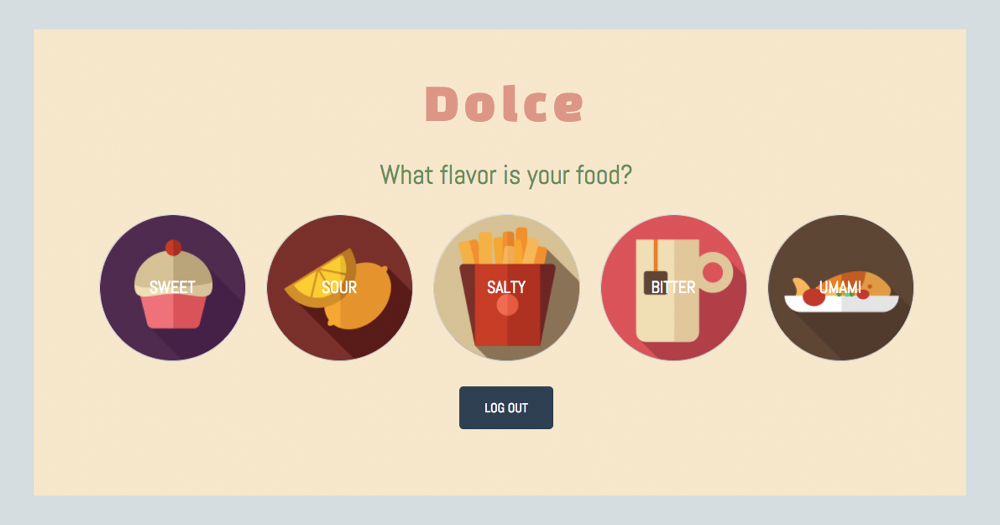
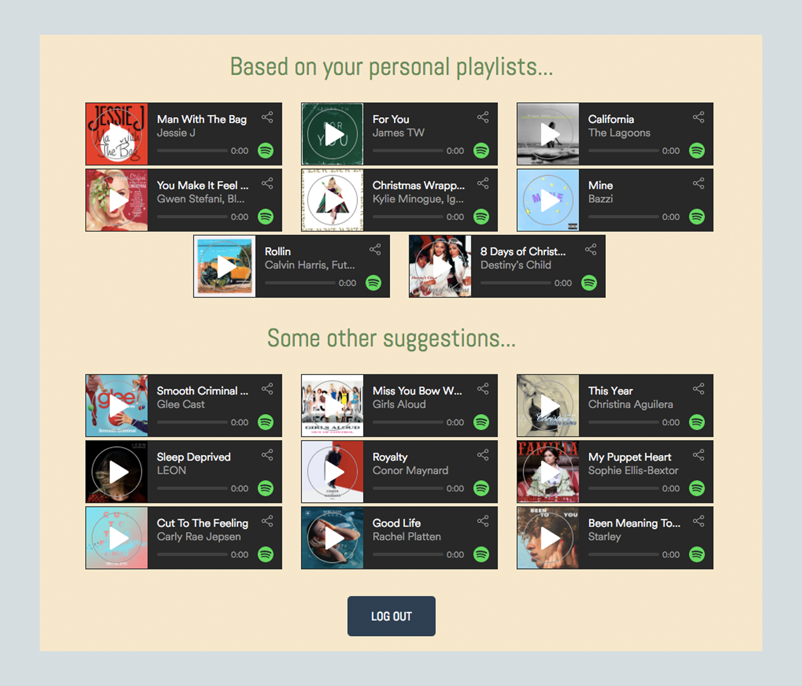

As part of my Interactive Systems Design and Technology course at the University of Washington, we were required to create an application that took data from an API and provide value to it. We studied Python and used Google App Engine to assist us in making our ideas come to life.
Dolce is a music-discovery web application that produces Spotify track recommendations based on food flavors. Our audial surroundings influence how we taste, and this app is based on this concept.
TRY IT OUTAs somebody who constantly searches for new music to listen to, I set out to create an application that revolved around music discovery. While reading articles online, I came across a piece about how our environment's sounds can influence our perceptions of taste. I found it inspiring how all our senses come together to create one wholesome experience, so I decided to build a music discovery app based on the flavors of the food you are eating.
Conducting further research regarding this phenomenon, I was able to gather enough information to gain a rough idea of which types of sounds influence which tastes and flavors. Since most of my peers stream music using Spotify, and because of its capabilities for music discovery, I decided to incorporate the Spotify API.
The idea is that while the user is eating, they log into the app and select a flavor that best matches their meal. The application looks through their Spotify playlists and determines which tracks suit the given flavor. Then baed on those tracks, Dolce recommends music that the user may enjoy. All the tracks listed on the page will match sound qualities that are found to enhance the flavor selected.
 I filmed a short video that has a demo of the application and briefly explains the core concept of the app.